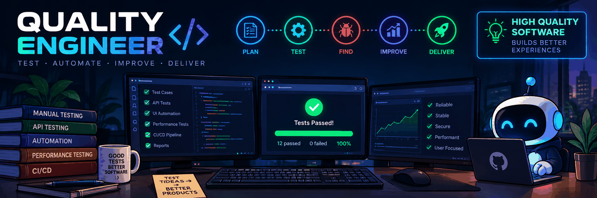

Test Automation
Playwright · pytest · Selenium
QUALITY ENGINEER · SOFTWARE QA
I'm Jeremiah, a Quality Engineer focused on thoughtful test design, API and backend validation, automation, and continuous quality improvement.

01 / ABOUT ME
It's about reducing risk, validating real user journeys, and helping teams release software with confidence.
I bring nearly seven years of software QA experience across manual testing, API and backend validation, database checks, and test automation. I enjoy investigating complex issues, communicating clear defects, and improving the way teams plan and execute testing.
This portfolio is a home for practical examples, sample test assets, and automation projects. The projects will use public demo systems or synthetic data and will not contain proprietary work.
02 / TOOLKIT
A snapshot of my QA toolkit. I keep expanding these skills through hands-on practice and portfolio projects.
Playwright · pytest · Selenium
Postman · Newman · Swagger
Locust · JMeter
SQL · PostgreSQL
Jenkins · GitHub · GitLab · Docker
Jira · TestRail · Zephyr · Test Strategy
Skill bars are visual design elements, not formal proficiency scores. Tool experience varies by project.
03 / SELECTED WORK
Portfolio projects are being developed. Each will include setup instructions, test design rationale, execution results, and lessons learned.
A maintainable Python and pytest suite for positive, negative, boundary, authentication, and response-schema checks against a public demo API.
Reusable UI test patterns with smoke and regression tags, fixtures, failure artifacts, and cross-browser execution.
A Locust workload with documented load profiles, response-time analysis, failure rates, and evidence-based recommendations.
Sample test plans, risk-based test scenarios, reproducible bug reports, and regression checklists for realistic workflows.
04 / QA APPROACH
Start with user impact, business rules, integrations, and failure modes to focus testing where it matters most.
Combine happy paths with negative, boundary, exploratory, and data-integrity scenarios.
Automate repeatable, valuable checks while keeping exploratory testing and human judgment in the loop.
Provide reproducible defects, useful evidence, transparent risks, and actionable feedback to the team.
05 / CONTACT
I'm open to connecting about Quality Engineering, software testing, and automation opportunities.